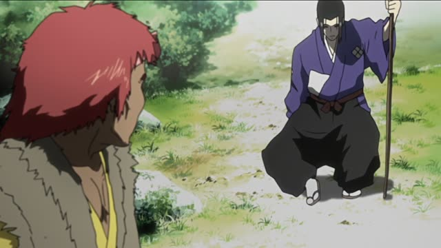
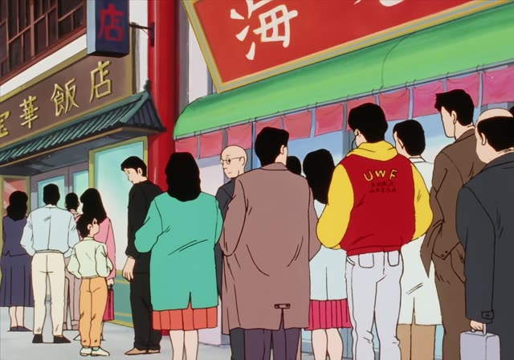

～ようになる
| Polite | ～ようになります・～ようになりました |
|---|---|
| Casual | ～ようになる・～ようになった |
Same meaning: "come to, become able to". Only the politeness changes.
1 Litre of Tears · Episode 7
時間の大切さが、分かるようになったんです。
"I've come to understand how precious time is."
～ようになる means "come to, get to the point where": a change over time. Plain verb + ようになる: 分かるようになる. With a can-form: できるようになる, "become able to".
On this card, Aya writes about what her illness taught her. 分かるようになった: she didn't before, now she does. んです makes it polite.
For adjectives and nouns, use なる alone: 寒くなる, 先生になる.
Shirokuma Cafe · Episode 4
そのうち、簡単に操作できるようになるよ。
"You'll get the hang of it soon."
On this card, Panda shows Shirokuma his new phone. できるようになる: one day, you'll be able to.
Quick Examples
Talking about your Japanese.
漢字が少し読めるようになりました。
"I've become able to read a little kanji."
PoliteYour friend learned to swim.
やっと泳げるようになった！
"I can finally swim!"
CasualYour kid changed.
最近、野菜を食べるようになった。
"Lately he's started eating vegetables."
CasualTalking about a coworker.
毎朝早く来るようになりました。
"He's started coming in early every morning."
PoliteWith and without
漢字が読める。
"I can read kanji." A fact.
漢字が読めるようになった。
"I've become able to read kanji." It's a change.
Examples from Media
Quartet · Episode 4
４の指、届くようになった？
"Can your fourth finger reach now?"
Asking his son about violin.

Samurai Champloo · Episode 21
おお、動けるようになったかの。
"Oh, you can move now, eh?"
Oishinbo · Episode 28
やっと人並みの生活ができるようになるまで
"Until I could finally live a normal life"
Good Morning Call · Episode 15
それから、ちょくちょく受け取るようになって
"And after that, I started accepting them now and then"
Slam Dunk · Episode 93
おやじ、本当に入るようになるのか？
"Coach, will his shots really start going in?"
Dungeon Meshi · Episode 1
普通ではない光景が続くようになる。
"Strange sights start appearing, one after another."
Narration about the dungeon.
Good Morning Call · Episode 12
待ち伏せまでするようになって
"She's even started waiting for me outside"

Oishinbo · Episode 13
ついついその手間を惜しむようになった。
"He started cutting that corner."
After the shop got famous.